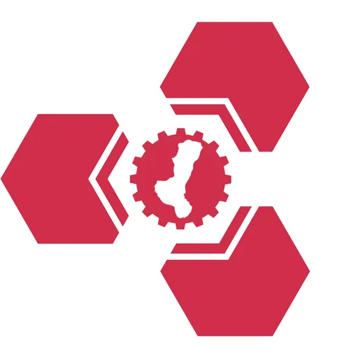

TUPV HIVE — Hub for Innovation & Value Engineering
Technological University of the Philippines – Visayas (TUPV) · Region XVIII: NIR
The HIVE (Hub for Innovation & Value Engineering) is the DOST-funded Technology Business Incubator of the Technological University of the Philippines – Visayas (TUP-Visayas), located at the Antonio Chan Memorial Technical Training Center, Marapara, Brgy. Bata, Bacolod City, Negros Occidental. Established with DOST-PCIEERD funding under TUP-Visayas — a premier public technical university serving the Visayas region — HIVE provides startup incubation, prototyping support, and business development assistance to innovators and entrepreneurs in the Negros Island Region.
- Category
- Technology Business Incubator
- Host institution
- Technological University of the Philippines – Visayas (TUPV)
- City
- Bacolod City, Negros Occidental
- Region
- Region XVIII: NIR
- Operating status
- Operating
About the Center
The center's name reflects TUP-Visayas's engineering and technical heritage: HIVE is a space where ideas are developed through engineering discipline, value-adding processes, and entrepreneurial drive. The facility includes locator startup offices, conference and training areas, a common equipment room with prototyping tools (including a 3D printing farm), and open co-working spaces — making it a comprehensive support environment for early-stage technology ventures.
Programs & Services
- Startup Incubation — Structured incubation program for technology-based startups with workspace, mentorship, and business development support
- Prototyping & Digital Fabrication — Access to a 3D printing farm and other fabrication equipment for developing and testing product prototypes
- Co-Working Spaces — Open workspaces for resident innovators, student entrepreneurs, and MSME collaborators
- Mentoring & Advisory — Business mentoring, coaching, and technical advisory services from TUPV faculty, industry experts, and DOST partners
- Training & Workshops — Capacity-building sessions on entrepreneurship, product development, IP management, and business planning
- Conference & Event Facilities — Training rooms and event spaces for workshops, seminars, and innovation events
- Industry & Funding Linkage — Connections to DOST programs (SETUP, IDEA, i3S), industry partners, and investors for commercialization and scaling support
Contact
Sources & references
- dailyguardian.com.ph/tupv-installs-biz-incubator-for-start-ups-in-negros-occ
- visayandailystar.com/tup-visayas-inaugurates-innovation-center
- facebook.com/DOSTTUPVHIVE
Details are drawn from public records and the sources above, July 2026.
Startupreneur Innovation Hub · synced from the Notion catalog (July 2026) · status: published.